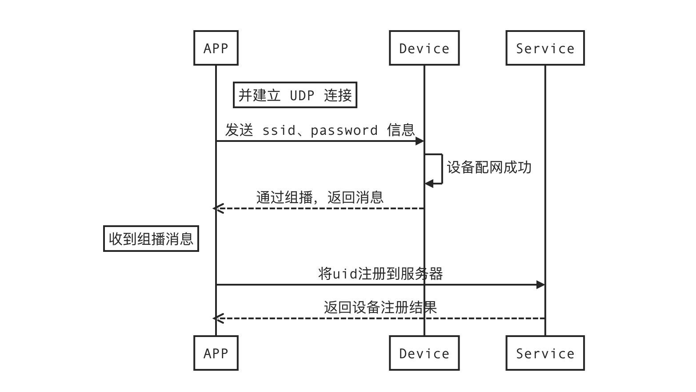
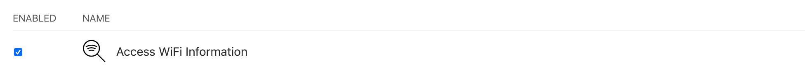

二维码模式（QR code mode）
二维码配网流程（Two-dimensional code distribution network process）

注意：
摄像头只能使用一个 可用的（网络顺畅）、非5G 的Wi-Fi网络，请在发送 ssid 与 password 时确认。（The camera can only use one available (smooth network), non 5G Wi-Fi network, please confirm when sending ssid and password.）
请允许app允许获取Wi-Fi权限，如下：（Please allow the app to allow access to Wi-Fi permissions, as follows:）
AppID 中勾选 Access WiFi Infomation（Check Access WiFi Infomation in AppID）
XCode 中 Capabilities 中，激活 Access WiFi Infomation 项（In Capabilities in XCode, activate the Access WiFi Infomation item）
二维码生成参数：可用的
Wi-Fi 账号、Wi-Fi 密码（Two-dimensional code generation parameters: availableWi-Fi account number,Wi-Fi password）NSString *QRCode = [NSString stringWithFormat:@"S=%@,P=%@",Wi-Fi 账号,Wi-Fi 密码];（NSString *QRCode = [NSString stringWithFormat:@"S=%@,P=%@",Wi-Fi account, Wi-Fi password];）用
QRCode生成二维码图片即可。（Use QRCode to generate QR code pictures.）